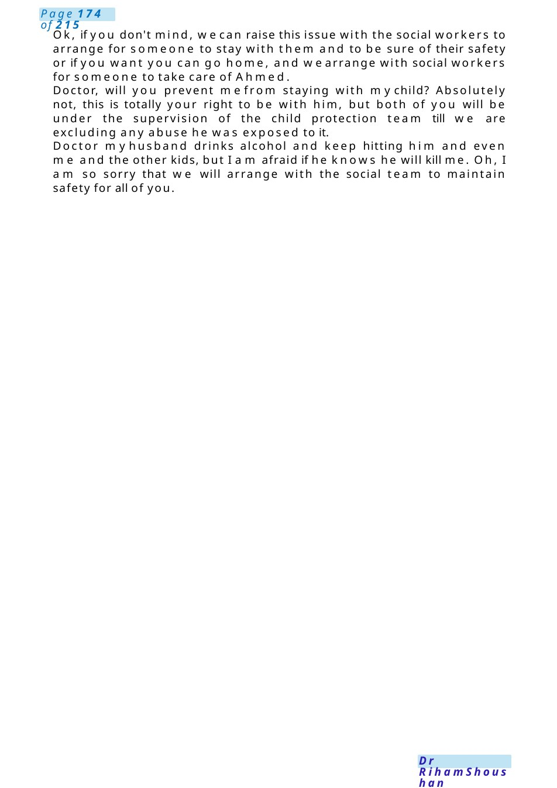

NAI
Examscenario: talk to miss Seham, mother of Ahmedwhohas 10 months cameto ERwith common cold, during exam, you noticed he is smelly with dirty clothes, and he is full of bruises in his back and around his mouth, talk to mother about need of admission. Explain to the mother that I amhere today to talk about health issues of Ahmed
Scenario Summary
Examscenario: talk to miss Seham, mother of Ahmedwhohas 10 months cameto ERwith common cold, during exam, you noticed he is smelly with dirty clothes, and he is full of bruises in his back and around his mouth, talk to mother about need of admission. Explain to the mother that I amhere today to talk about health issues of Ahmed
Full Original Scenario

NAI
Examscenario: talk to miss Seham, mother of Ahmedwhohas 10 months cameto ERwith common cold, during exam, you noticed he is smelly with dirty clothes, and he is full of bruises in his back and around his mouth, talk to mother about need of admission.
N.B: you can ask about attendance
Explain to the mother that I amhere today to talk about health issues of Ahmed
Can you tell mehow much you know about Ahmedcondition? Ahmed has just a runny nose and a cough. Yes, he has flu and for that wewill give him treatment, but while examining him wenoticed that he is having bruises all over his body. Doyou have any idea where he got these bruises. Yes, he is following the physiotherapist and most probably he got bruised during his session.
Ok, but after examining the child, wefound that the bruise did not go with chest physiotherapy. What doyouthink this bruise resulted from; there's someonewhomaybe hitting or abusing him?Nodoctor, please just give him medicine and wewill go home.
MSSeham, we need to admit Ahmed. Whydoctor he just has runny nose? Weneed to investigate him for any blood disease or other medical problems, and to maintain his safety. Wewill do a full examination including eye, blood tests, image for his bones, and CT scan for his brain. Also, we need to be sure no one abuse him, and wewill Involve consultant, social workers, child protection service, physiotherapy and the chest consultant.
What are you saying? AmI bruising mychild? Nomam, I did not say that I amnot accusing you at all, just I said wewant to keep him safe.
Doctor, I don't want to be admitted. MayI knowwhy, MSSeham? Because I have other kids at home, I cannot leave them alone.

Ok, if you don't mind, wecan raise this issue with the social workers to arrange for someone to stay with them and to be sure of their safety or if you want you can go home, and wearrange with social workers for someone to take care of Ahmed.
Doctor, will you prevent mefrom staying with mychild? Absolutely not, this is totally your right to be with him, but both of you will be under the supervision of the child protection team till we are excluding any abuse he was exposed to it.
Doctor myhusband drinks alcohol and keep hitting him and even me and the other kids, but I am afraid if he knows he will kill me. Oh, I am so sorry that we will arrange with the social team to maintain safety for all of you.

Colleague Changing Notes in Patient File
MRCPCHCommunication Scenario
Topic: Speaking to a colleague whochanged notes in a patient file
Setting: Paediatric ward discussion room
Candidate Task: You are the paediatrics registrar. You noticed that your colleague altered documentation in a patient’s notes after the entry had already been written. Nopatient harmoccurred. Speak to your colleague professionally and supportively while addressing the seriousness of documentation standards.
Candidate: Hi, thanks for taking a moment to speak with me privately. Before we start, I want to say this is a supportive conversation. I respect you as a colleague, and I knowweall work under pressure in a busy environment. I wanted to discuss something I noticed regarding the documentation in the HSPpatient’s file. I saw that some notes appeared to have been changed after the original entry. Can you talk methrough what happened?
Role Player (Colleague): I only changed a few details because the notes were unclear. I didn’t think it was a big issue because the patient wasn’t harmed.”
Candidate: I understand your intention was not to harm the patient, and it’s reassuring that no harm occurred. However, documentation is extremely important for patient safety, communication within the team, and medico-legal reasons. Notes should always remain accurate, transparent, and in chronological order.
If corrections are needed, they should be madeaccording to hospital policy —for example, byadding an amended entry with the date, time, and signature, rather than changing previous documentation and inform your senior first.
Role Player: I was worried the consultant would think I madea mistake.
Candidate: I can understand why you felt anxious. All doctors make mistakes during training and practice, and a single mistake does not define your career. What is most important is honesty, insight, and correcting things appropriately. Trying to alter notes can create bigger concerns than the original mistake itself.
Wework as one team, and part of our role is learning from each other and supporting one another.”Role Player: Are you going to report me?
Candidate: At this stage, since no patient harm occurred and you have been open during this discussion, mypriority is to ensure this does not happen again and that we follow proper practice going forward.
I cannot promise confidentiality if the issue needs escalation according to policy, especially if patient safety is involved. However, I would support you in speaking honestly with the consultant if needed. If the consultant asks, the best approach is simply to explain truthfully what happened and what you have learned from it.